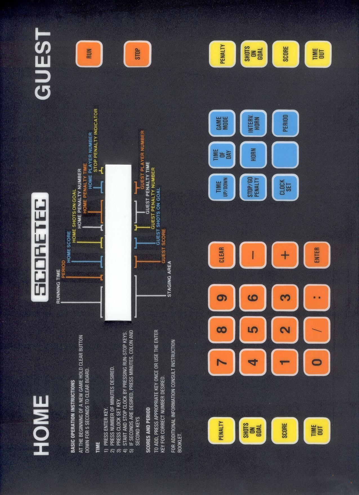

LEARN YOUR RINK'S CONTROLLER
Scoretec Ultimatic U1000
ENTER before digits · colon and slash · five penalty slots.
ARENA SCOREBOARD● CLOCK STOPPED
RINKSIDE ARENA HOCKEY
SHOTS 0 HOME · GUEST 0
0GOAL LIGHT
15:00
PERIOD 10GOAL LIGHT
—
◉PENALTIES RUN
—
CONTROL CONSOLEPhoto & manual ↓
Physical key positions preserved · swipe the console sideways on a phone
Controller photo & manual · Scoretec Ultimatic U1000

Training configuration & limits
U1000 control family with shots and player-number display, as described in the manufacturer manual. Five penalty slots per team, two active. Staging uses minutes or M:SS with optional /player. Long holds on CLEAR and STOP/GO PENALTIES take five seconds. Interval mode 1 and count-up limit mode 2 are implemented; full interval programming, time-of-day setup and team timeouts are omitted. Naden appears in the hosted manual title; that does not establish that every Naden console is a U1000.
Documented Canadian use: Coquitlam, British Columbia; Calgary, Alberta. Rink evidence ↗